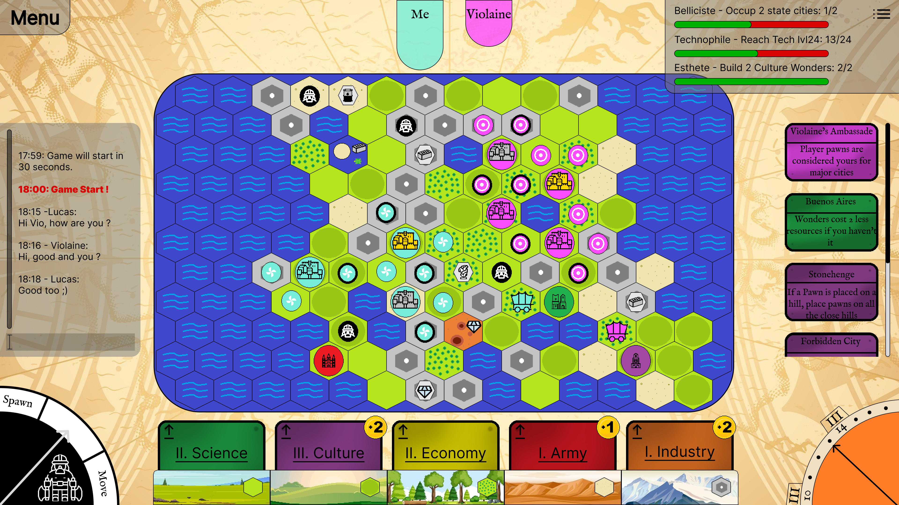

|
Civilization
|
This is a school project of four french students of the ENSEA. During our last year of school, we were ask to adapt a board game into a video game. Thus, we choose to implement the game "Civilization: A New Dawn".
Documentation, rules, code and report: here
Link to rules: here
Link to the recap of specific actions: here
Link to graphic resources : here
Link to the credits: here
This game is a strategy board game in which two to four players act as the leaders of history’s most memorable civilizations. Over the course of the game, they will expand their domains, gain new technologies, and build many of humanity’s greatest wonders. In the end, one civilization will rise above all others to leave its indelible mark upon history.
If you want to know more about the rules and the documentation of the game you can click here. To read the rules, go fisrt on the tab called "List of pages" and then click on "rules".

Our build system must use this template.
Other constraints are: